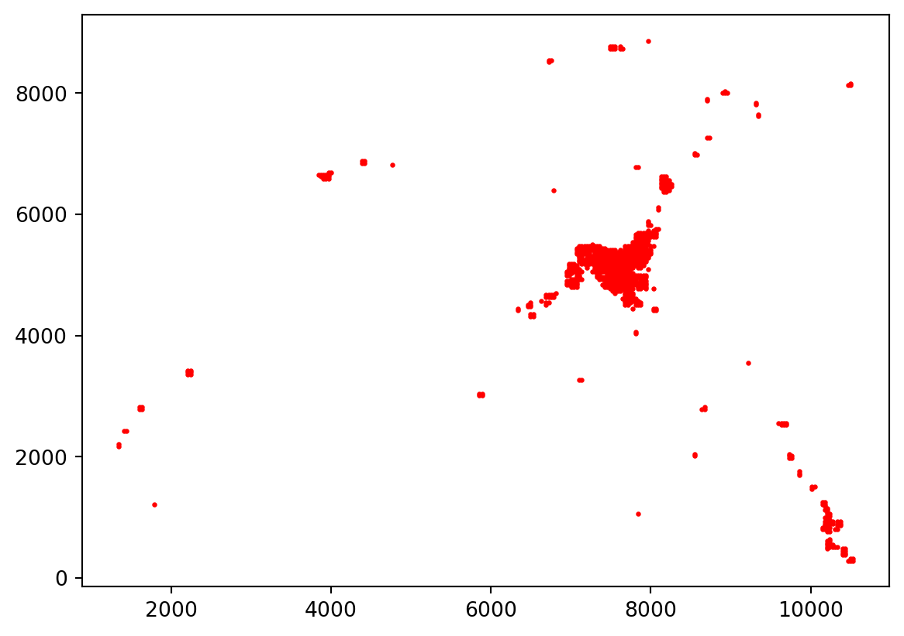

import pandas as pd
import numpy as np
import gurobipy as gp
from gurobipy import GRB
import matplotlib.pyplot as plt
from scipy.spatial.distance import cdist
nLocs = pd.read_excel('NodeLocations.xlsx', sheet_name = 'MoleStNicholas').to_numpy()
N = len(nLocs)
d = cdist(nLocs, nLocs)
Dmax = 100
for i in range(N):
plt.scatter(nLocs[i,0], nLocs[i,1], color = 'red', s = 2)